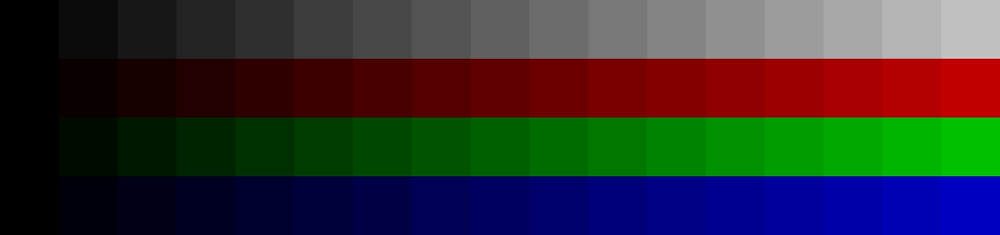

When you hover over this video, a very narrow gaussian blur effect will be applied to it. This will result in the video falling out of overlay mode and being rendered by Chromium's compositor, whereupon it will exactly match the below PNG image.
This issue of "HDR video cannot color match anything and behaves differently on all platforms" should be resolved the SMPTE ST 2094-50 standard, which anchors HDR relative to SDR and is awesome in many other ways too!
